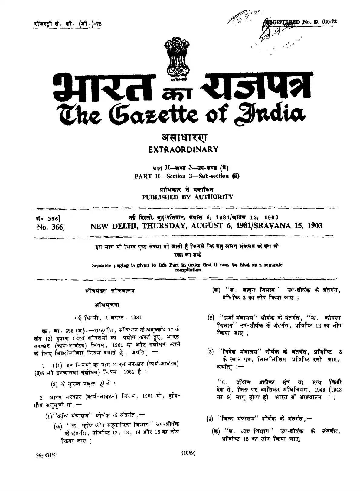
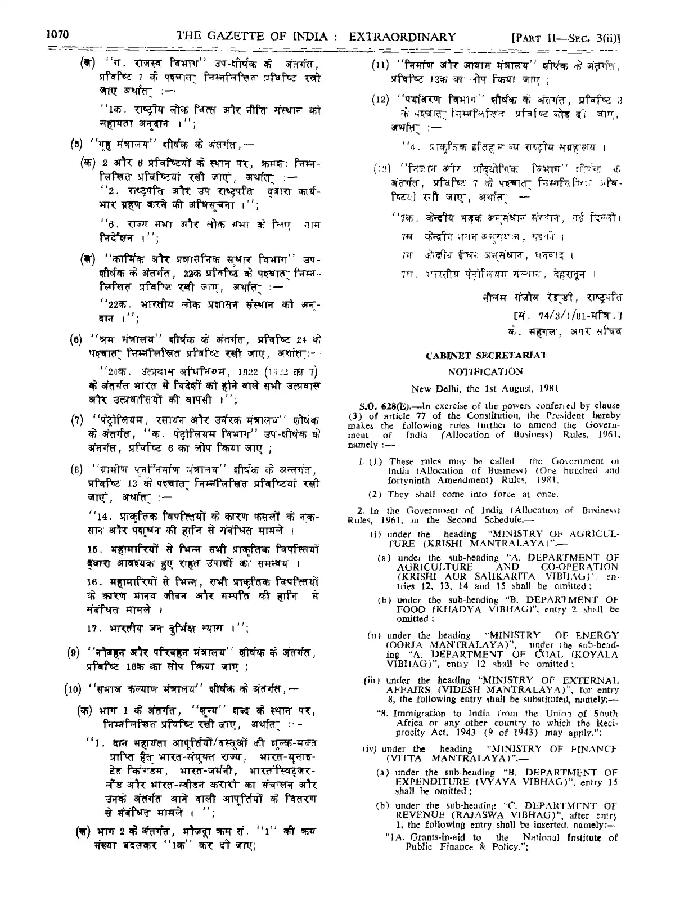
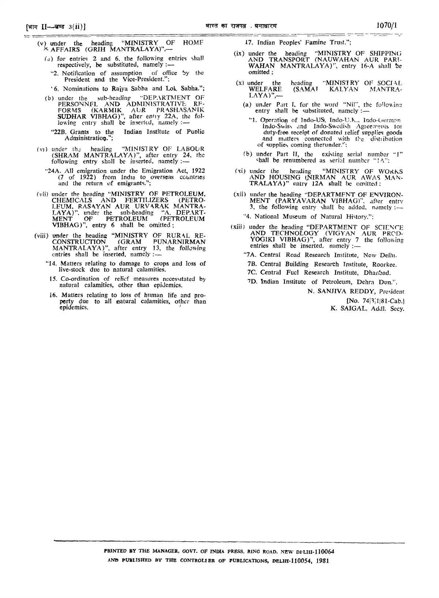

Amendment #149 (S.O. 628(E), 1981)
18 changes: 0 to the First Schedule, 18 to the Second Schedule. 16 applied2 not applied
What it did to the ministries
- grewMinistry of Rural Reconstruction grows from 16 to 20 subjects change 12 · histories: Rural Development
- grewDepartment of Science and Technology grows from 18 to 22 subjects change 18 · histories: Science and Technology
The order, page by page
Page 1 of 4

Page 2 of 4

123456Schedule 2 › MINISTRY OF AGRICULTURE › DEPARTMENT OF AGRICULTURE AND CO-OPERATION › entry 12; Schedule 2 › MINISTRY OF AGRICULTURE › DEPARTMENT OF AGRICULTURE AND CO-OPERATION › entry 13; Schedule 2 › MINISTRY OF AGRICULTURE › DEPARTMENT OF AGRICULTURE AND CO-OPERATION › entry 14; Schedule 2 › MINISTRY OF AGRICULTURE › DEPARTMENT OF AGRICULTURE AND CO-OPERATION › entry 15
applied at schedule 2 › ministry Ministry of Agriculture › department A › part I › entry 12 in the Rules after #149
Schedule 2 › MINISTRY OF AGRICULTURE › DEPARTMENT OF FOOD › entry 2
applied at schedule 2 › ministry Ministry of Agriculture › department B › group_heading I › entry 2 in the Rules after #149
Schedule 2 › MINISTRY OF ENERGY › DEPARTMENT OF COAL › entry 12
applied at schedule 2 › ministry MINISTRY OF ENERGY (0ORJA MANTRALAYA) › department A › entry 12 in the Rules after #149
Schedule 2 › MINISTRY OF EXTERNAL AFFAIRS › entry 8
- 8. Immigration to India from the Union of South Africa or any other country to which the Reciprocity Act. 1943 (9 of 1943 ) may apply.
applied at schedule 2 › ministry MINISTRY OF EXTERNAL AFFAIRS › entry 8 in the Rules after #149
Schedule 2 › MINISTRY OF FINANCE › DEPARTMENT OF EXPENDITURE › entry 15
applied at schedule 2 › ministry MINISTRY OF FINANCE › department B › entry 15 in the Rules after #149
after Schedule 2 › MINISTRY OF FINANCE › DEPARTMENT OF REVENUE › entry 1
- LA. Grants-in-aid to the National Institute of Public Finance & Policy.
not applied (the change could not be placed in the Rules as read; see How this document was read)
Page 3 of 4

789101112131415161718Schedule 2 › MINISTRY OF HOME AFFAIRS › entry 2
- 2. Notification of assumption of office by the President and the Vice-President.
applied at schedule 2 › ministry MINISTRY OF HOME AFFAIRS › part I › group_heading The following subjects which are relatable to… in the Rules after #149
Schedule 2 › MINISTRY OF HOME AFFAIRS › entry 6
- 6. Nominations to Rajya Sabha and Lok Sabha.
applied at schedule 2 › ministry MINISTRY OF HOME AFFAIRS › part I › group_heading The following subjects which are relatable to… in the Rules after #149
after Schedule 2 › MINISTRY OF HOME AFFAIRS › DEPARTMENT OF PERSONNEL AND ADMINISTRATIVE RFORMS › entry 22A
- 22B. Grants to the Indian Institute of Public Administration.
applied at schedule 2 › ministry MINISTRY OF HOME AFFAIRS › department DEPARTMENT OF PERSONNEL AND ADMINISTRATIVE REFORMS ›… in the Rules after #149
read quote mismatch, states inferred loose
after Schedule 2 › MINISTRY OF LABOUR › entry 24
- 24A. All emigration under the Emigration Act, 1922 (7 of 1922) from India to overseas countries and the return of emigrants.
applied at schedule 2 › ministry MINISTRY OF LABOUR › part V › entry 24A in the Rules after #149
Schedule 2 › MINISTRY OF PETROLEUM, CHEMICALS AND FERTILIZERS › DEPARTMENT OF PETROLEUM › entry 6
applied at schedule 2 › ministry MINISTRY OF PETROLEUM, CHEMICALS AND FERTILIZERS › department A › entry 6 in the Rules after #149
after Schedule 2 › MINISTRY OF RURAL RECONSTRUCTION › entry 13
- 14. Matters relating to damage to crops and loss of live-stock due to natural calamities.
- 15. Co-ordination of relief measures necessitated by natural calamities, other than epidemics.
- 16. Matters relating to loss of human life and property due to all natural calamities, other than epidemics. PRINTED BY THE MANAGER, GOVT. OF INDIA AND PUBLISHED BY THE CONTROLIER OF
- 17. Indian Peoples' Famine Trust.
applied at schedule 2 › ministry MINISTRY OF RURAL RECONSTRUCTION › entry 14 in the Rules after #149
read page break
Schedule 2 › MINISTRY OF SHIPPING AND TRANSPORT › entry 16-A
not applied (the change could not be placed in the Rules as read; see How this document was read)
Schedule 2 › MINISTRY OF SOCIAL WELFARE › Part I
- 1. Operation of Indo-US, Indo-U.k., Indo-German Indo-Swiss and Indo-Swedish Agreements for duty-free receipt of donated relief supplies goods and matters connected with the distribution of supplies coming therunder.
applied at schedule 2 › ministry MINISTRY OF SOCIAL WELFARE › part I in the Rules after #149
Schedule 2 › MINISTRY OF SOCIAL WELFARE › Part II › entry 1
renumbered as A
applied at schedule 2 › ministry MINISTRY OF SOCIAL WELFARE › part II › entry A in the Rules after #149
Schedule 2 › MINISTRY OF WORKS AND HOUSING › entry 12A
applied at schedule 2 › ministry MINISTRY OF WORKS AND HOUSING › entry 12A in the Rules after #149
after Schedule 2 › DEPARTMENT OF ENVIRONMENT › entry 3
- 4. National Museum of Natural History.
applied at schedule 2 › department DEPARTMENT OF ENVIRONMENT › entry 4 in the Rules after #149
after Schedule 2 › DEPARTMENT OF SCIENCE AND TECHNOLOGY › entry 7
- 7A. Central Road Research Institute, New Delhi.
- 7B. Central Building Research Institute, Roorkee.
- 7C. Central Fuel Research Institute, Dhanbad.
- 7D. Indian Institute of Petroleum, Dehra Dun.
applied at schedule 2 › department DEPARTMENT OF SCIENCE AND TECHNOLOGY › entry 7A in the Rules after #149
Page 4 of 4
How this document was read
Changes placed by an inference rule
| Change | Rule | Status | What |
|---|---|---|---|
| 9 | loose | accepted | change 9: department DEPARTMENT OF PERSONNEL AND ADMINISTRATIVE RFORMS taken for department DEPARTMENT OF PERSONNEL AND ADMINISTRATIVE REFORMS, named loosely |
Known issues
| Change | Issue | Known as |
|---|---|---|
| 6 | change 6: no department DEPARTMENT OF REVENUE under schedule 2 › ministry MINISTRY OF FINANCE | Finance's Department of Revenue |
| 13 | change 13: no entry 16–A under schedule 2 › ministry Ministry of Shipping and Transport | Entries not in the state |
From the Government of India (Allocation of Business) Rules, 1961 and their amendments, as published by the Cabinet Secretariat (cabsec.gov.in), read by orgpedia. The readings of the older scanned gazettes have known gaps.